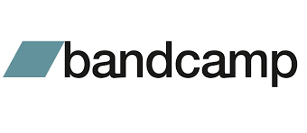
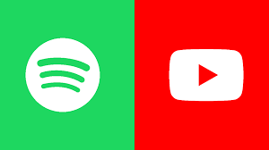

1- Bandcamp

Definitivamente a mlehor plataforma que consigo pensar quando o assunto é apoiar os artistas que você mais gosta e conseguir ouví-los independente de conexão com a internet. O Bandcamp te possibilita não só comprar diretamente a mídia digital dos artistas (o que já movimenta o dinheiro diretamente para eles) como também doar valores e comprar as mídias físicas, além disso, uma vez compradas você tem acesso total as musicas e não precisa de internet para ouvir onde quiser.
2- Soundcloud

O SoundCloud é uma plataforma que também torna possível para que artistas pequenos tenham um espaço e alcance maior, então vale a pena conferir já que alguns dos músicos da sua cidade podem estar aqui.
3- Spotify/Youtube

É claro que esses você já conhecia, mas vale a pena mencionar que a monetização para quem publica nessas plataformas acontece de forma muito mais indireta. Se a sua intenção é apoiar pequenos projetos de artistas independentes, essas não são suas melhores opções, mas é claro, são maneiras convencionais de ouvir e compartilhar música, mostrar aos seus amigos e usar as ferramentas de compartilhamento para as redes sociais com essas plataformas também é uma maneira de apoiá-los.